Slides 9–20
Architecture, orchestration and trust
Slide 9 Build channel-independent capabilities
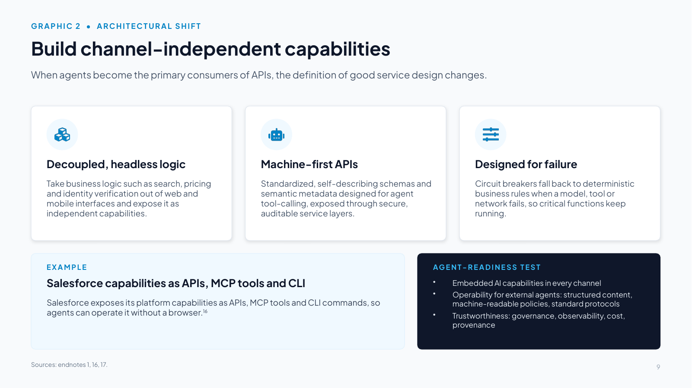
Slide text
When agents become the primary consumers of APIs, the definition of good service design changes.
Decoupled, headless logic
Take business logic such as search, pricing and identity verification out of web and mobile interfaces and expose it as independent capabilities.
Machine-first APIs
Standardized, self-describing schemas and semantic metadata designed for agent tool-calling, exposed through secure, auditable service layers.
Designed for failure
Circuit breakers fall back to deterministic business rules when a model, tool or network fails, so critical functions keep running.
EXAMPLE
Salesforce capabilities as APIs, MCP tools and CLI
Salesforce exposes its platform capabilities as APIs, MCP tools and CLI commands, so agents can operate it without a browser.16
AGENT-READINESS TEST
Embedded AI capabilities in every channel
Operability for external agents: structured content, machine-readable policies, standard protocols
Trustworthiness: governance, observability, cost, provenance
Speaker notes
Reference Salesforce's hosted MCP servers (endnote [16]). When agents become the primary consumers of APIs, UI-oriented endpoints fail. APIs must provide rich semantic metadata, self-describing validation schemas, and deterministic fallbacks when probabilistic LLMs generate hallucinated function calls.
Additional talking points:
- As agents increasingly become the primary consumers of enterprise services, architecture may need to move from channel-centric to capability-centric design, organized around functions such as search, pricing or identity verification, exposed through secure, auditable and standardized service layers and designed for failure so critical functions continue in a degraded mode [1].
- Salesforce exposes platform capabilities as APIs, MCP tools and CLI commands, so agents can operate the system without a browser, and its hosted MCP servers let compatible AI clients work with Salesforce data and automation under each user's permissions [16].
- A digital-channel readiness framework [17] gives a practical test with three dimensions: embedded agentic capabilities, operability for external agents (structured content, machine-readable policies, standard agent protocols and APIs), and trustworthiness (governance, compliance, observability, cost management, scalability and data provenance). It cites three shifts: conversational journeys replacing click-based navigation, assistants that browse and transact, and rising expectations for privacy, explainability and governance.
- Reuse is what makes capability-first design scale: without a standard like MCP, every new pairing of agent and tool needs its own integration, so integrations rise quadratically as agents spread. With MCP, integrations are reused and the effort grows only linearly [18].
Slide 10 How MuleSoft exposes enterprise applications
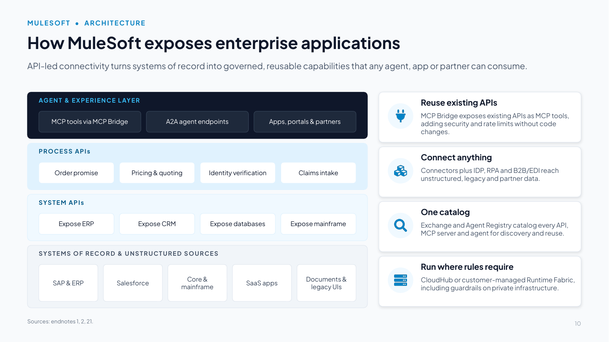
Slide text
API-led connectivity turns systems of record into governed, reusable capabilities that any agent, app or partner can consume.
AGENT & EXPERIENCE LAYER
MCP tools via MCP Bridge
A2A agent endpoints
Apps, portals & partners
PROCESS APIs
Order promise
Pricing & quoting
Identity verification
Claims intake
SYSTEM APIs
Expose ERP
Expose CRM
Expose databases
Expose mainframe
SYSTEMS OF RECORD & UNSTRUCTURED SOURCES
SAP & ERP
Salesforce
Core & mainframe
SaaS apps
Documents & legacy UIs
Reuse existing APIs
MCP Bridge exposes existing APIs as MCP tools, adding security and rate limits without code changes.
Connect anything
Connectors plus IDP, RPA and B2B/EDI reach unstructured, legacy and partner data.
One catalog
Exchange and Agent Registry catalog every API, MCP server and agent for discovery and reuse.
Run where rules require
CloudHub or customer-managed Runtime Fabric, including guardrails on private infrastructure.
Speaker notes
Message: MuleSoft's API-led connectivity makes enterprise applications usable by agents. Enterprise capabilities should be exposed through secure, auditable, standardized service layers [1]. API-led connectivity follows that pattern.
How to explain API-led connectivity to executives:
- System APIs expose data and functions in core systems (ERP, CRM, databases, mainframe) and shield consumers from change underneath.
- Process APIs compose those into business capabilities such as order promise, pricing, identity verification or claims intake.
- The agent and experience layer publishes the same capabilities to agents (as MCP tools via MCP Bridge, or as A2A endpoints), to apps and portals, and to partners.
Because the capability is built once and governed at the gateway, the same policy applies whether a person, an app or an agent calls it.
Facts:
- MCP Bridge makes existing APIs agent-ready by exposing them as MCP tools and extends security and rate-limiting without touching code [21].
- MuleSoft connectors, Intelligent Document Processing, RPA and B2B/EDI reach unstructured, legacy and partner data [21].
- Runtime Fabric deployment lets customers run guardrails on their own infrastructure for private cloud and on-premises workloads [21].
- 2026 Connectivity Benchmark: 50% of organizations already use APIs to connect and govern AI [2].
Why reuse pays: exposing each capability once, as a governed API and MCP tool, keeps integration effort growing linearly rather than quadratically as agents multiply [18].
Slide 11 Choose the architectural paradigm before the platform
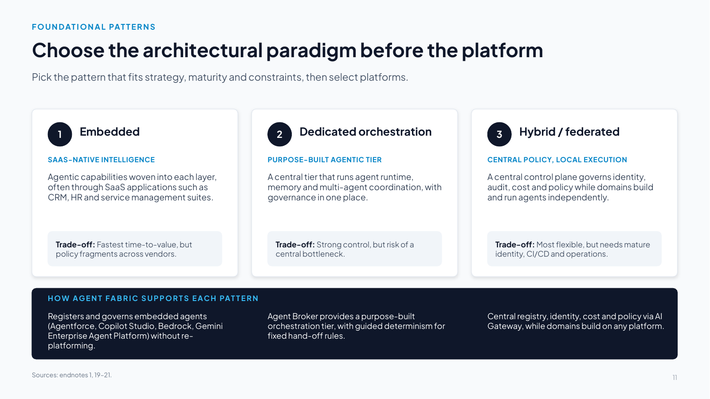
Slide text
Pick the pattern that fits strategy, maturity and constraints, then select platforms.
1. Embedded
SAAS-NATIVE INTELLIGENCE
Agentic capabilities woven into each layer, often through SaaS applications such as CRM, HR and service management suites.
Trade-off: Fastest time-to-value, but policy fragments across vendors.
2. Dedicated orchestration
PURPOSE-BUILT AGENTIC TIER
A central tier that runs agent runtime, memory and multi-agent coordination, with governance in one place.
Trade-off: Strong control, but risk of a central bottleneck.
3. Hybrid / federated
CENTRAL POLICY, LOCAL EXECUTION
A central control plane governs identity, audit, cost and policy while domains build and run agents independently.
Trade-off: Most flexible, but needs mature identity, CI/CD and operations.
HOW AGENT FABRIC SUPPORTS EACH PATTERN
Registers and governs embedded agents (Agentforce, Copilot Studio, Bedrock, Gemini Enterprise Agent Platform) without re-platforming.
Agent Broker provides a purpose-built orchestration tier, with guided determinism for fixed hand-off rules.
Central registry, identity, cost and policy via AI Gateway, while domains build on any platform.
Speaker notes
Leadership must decide on the architectural pattern before signing platform contracts [1][19]. 1. Embedded: Ideal for functional silos like HR or CRM, but risks fragmented policy. 2. Dedicated orchestration: Essential when strict compliance or high-security data operations require every prompt and token to flow through a centralized gate. 3. Hybrid/federated: The enterprise standard for large organizations, establishing centralized guardrails while allowing distributed business units to build autonomous agents.
Nuance for a CIO audience: no paradigm is universally correct, and the choice should follow strategy, maturity and constraints [1]. In practice, large multi-vendor enterprises most often land on hybrid/federated. Because Agent Fabric registers and governs agents regardless of where they were built [21], it suits that pattern, and it can also sit behind embedded and dedicated designs.
Sequencing: Bain [20] finds that enterprises investing in centralized governance, reusable orchestration, unified agent registries and platform-level policy enforcement move from concept to production faster, and that federated discovery and cross-domain routing should come last, once governance and orchestration are mature.
Endnote [19] (Ravi et al., "Architecting the agentic enterprise," 2026) is the source for these patterns. No public copy was located.
Slide 12 Route every task to the right model, place and price
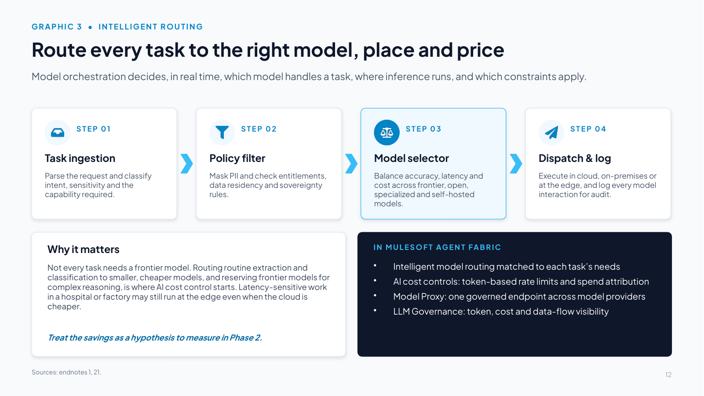
Slide text
Model orchestration decides, in real time, which model handles a task, where inference runs, and which constraints apply.
STEP 01
Task ingestion
Parse the request and classify intent, sensitivity and the capability required.
STEP 02
Policy filter
Mask PII and check entitlements, data residency and sovereignty rules.
STEP 03
Model selector
Balance accuracy, latency and cost across frontier, open, specialized and self-hosted models.
STEP 04
Dispatch & log
Execute in cloud, on-premises or at the edge, and log every model interaction for audit.
Why it matters
Not every task needs a frontier model. Routing routine extraction and classification to smaller, cheaper models, and reserving frontier models for complex reasoning, is where AI cost control starts. Latency-sensitive work in a hospital or factory may still run at the edge even when the cloud is cheaper.
Treat the savings as a hypothesis to measure in Phase 2.
IN MULESOFT AGENT FABRIC
Intelligent model routing matched to each task’s needs
AI cost controls: token-based rate limits and spend attribution
Model Proxy: one governed endpoint across model providers
LLM Governance: token, cost and data-flow visibility
Speaker notes
The core mechanism of the control plane is dynamic arbitration. Not every query requires a flagship frontier model: a large share of routine enterprise requests (parsing, routing, classification) can often be served by compact, fine-tuned small language models at a fraction of the latency and cost. Step 3 dynamically matches the model to the SLA. Measure your own task mix and savings in Phase 2.
Framing: model orchestration is an intelligent router that decides in real time which model should handle a task, where inference should occur, and which cost, latency and regulatory constraints govern the decision [1]. At the infrastructure layer this becomes policy-based workload routing: a latency-sensitive workload in a hospital or factory may need to run at the edge even when cloud execution is cheaper.
MuleSoft Agent Fabric provides intelligent model routing, AI cost controls (token-based rate limits and spend attributed by team, app and use case), Model Proxy (a single governed endpoint across model providers) and LLM Governance in AI Gateway, which gives centralized visibility of token usage, costs and data flows for third-party models [21].
Treat cost visibility as a control. In KPMG's Q2 2026 pulse only 26% of organizations had full, real-time visibility into what their AI systems cost to operate, and in Q3 43% had set usage or token budgets [8]. Tag every model and tool call to an owner, a use case and a cost center, alert as spend nears budget [14], and compare the cost of each completed outcome with the same work done by people [22]. The FinOps Foundation's FinOps for AI adds unit metrics such as cost per inference and per token, and its FOCUS specification gives billing data a common format [23].
Exposure limits cap what agents do, as cost limits cap what they spend. A per-call check cannot see many individually valid actions adding up past a limit, so a custom Omni Gateway policy (Cross-Session Aggregate-Risk Gate) reserves exposure against a shared budget across calls, agents and sessions [78].
Slide 13 Context engineering and open interoperability
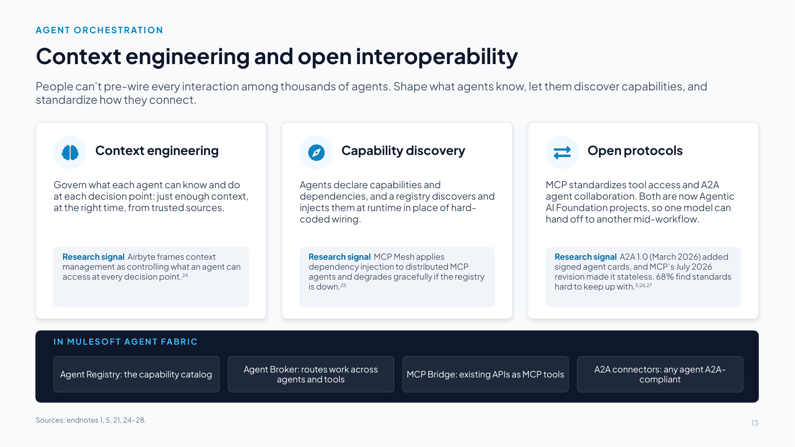
Slide text
People can’t pre-wire every interaction among thousands of agents. Shape what agents know, let them discover capabilities, and standardize how they connect.
Context engineering
Govern what each agent can know and do at each decision point: just enough context, at the right time, from trusted sources.
Research signal Airbyte frames context management as controlling what an agent can access at every decision point.24
Capability discovery
Agents declare capabilities and dependencies, and a registry discovers and injects them at runtime in place of hard-coded wiring.
Research signal MCP Mesh applies dependency injection to distributed MCP agents and degrades gracefully if the registry is down.25
Open protocols
MCP standardizes tool access and A2A agent collaboration. Both are now Agentic AI Foundation projects, so one model can hand off to another mid-workflow.
Research signal A2A 1.0 (March 2026) added signed agent cards, and MCP’s July 2026 revision made it stateless. 68% find standards hard to keep up with.5,26,27
IN MULESOFT AGENT FABRIC
Agent Registry: the capability catalog
Agent Broker: routes work across agents and tools
MCP Bridge: existing APIs as MCP tools
A2A connectors: any agent A2A-compliant
Speaker notes
Reference endnotes [24] (Pedro Lopez / Airbyte) and [25] (MCP Mesh). Context engineering has replaced static prompting: it treats the context window as a managed computational cache, injecting just-in-time enterprise data and active tools via the Model Context Protocol (MCP) standard.
Additional talking points:
- As open-source AI and thousands of autonomous or semi-autonomous agents are integrated, people won't be able to anticipate every interaction or encode every path in advance [1]. Hard-coded orchestration becomes a liability as agents act across tools, files and open networks.
- Airbyte [24]: context management controls what an agent can access at each decision point. Airbyte also offers a Context Store to keep retrieval focused on the right business data [24]. Treat it as a vendor offering, not independent validation.
- MCP Mesh [25] is an open-source framework in which agents declare capabilities and dependencies. A registry discovers them and injects dependencies at runtime, with health checks and graceful degradation if the registry is unavailable. This is distributed dynamic dependency injection: coordination by capability rather than fixed instruction.
- Standards churn is real: in the 2026 Connectivity Benchmark, 68% of IT leaders said keeping pace with emerging agent standards and protocols is challenging [5], which argues for a control plane that absorbs protocol change.
- Agent Fabric mapping [21]: Agent Registry (capability catalog), Agent Broker (routes work across agents and tools), MCP Bridge (APIs as MCP tools), A2A support (pre-built connectors to make agents A2A-compliant).
- 2026 protocol facts: both MCP and A2A are now projects of the Agentic AI Foundation, hosted by the Linux Foundation. A2A reached version 1.0 in March 2026, adding version negotiation, multi-tenancy and signed agent cards [27]. MCP's July 2026 revision (2026-07-28) made the protocol stateless: no sessions or initialization handshake, standard Mcp-Method and Mcp-Name headers on every HTTP request, OpenTelemetry trace context in each call, issuer validation in authorization, and several features deprecated with a minimum 12-month window [26]. Google contributed its Agent Payments Protocol (AP2) to the FIDO Alliance in April 2026 [28]. Treat it as pre-standard.
- What the control plane does with that: the registry checks signed agent cards, and the gateway applies policy to MCP's standard headers and joins every call to its trace, so each team does not re-implement protocol change. Confirm which MCP and A2A versions each gateway, registry and agent platform supports.
Slide 14 Tier agent autonomy and bind each tier to controls
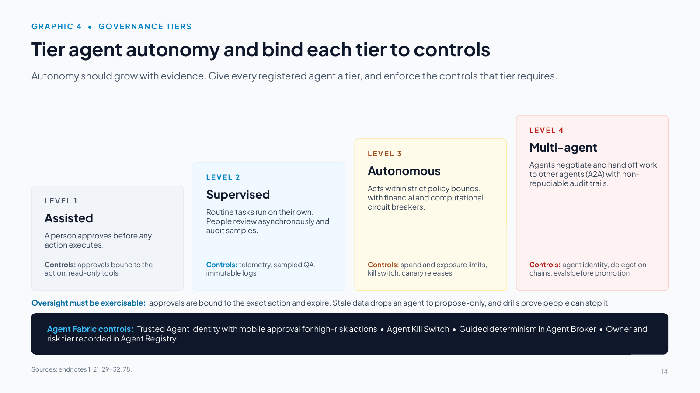
Slide text
Autonomy should grow with evidence. Give every registered agent a tier, and enforce the controls that tier requires.
LEVEL 1
Assisted
A person approves before any action executes.
Controls: approvals bound to the action, read-only tools
LEVEL 2
Supervised
Routine tasks run on their own. People review asynchronously and audit samples.
Controls: telemetry, sampled QA, immutable logs
LEVEL 3
Autonomous
Acts within strict policy bounds, with financial and computational circuit breakers.
Controls: spend and exposure limits, kill switch, canary releases
LEVEL 4
Multi-agent
Agents negotiate and hand off work to other agents (A2A) with non-repudiable audit trails.
Controls: agent identity, delegation chains, evals before promotion
Oversight must be exercisable: approvals are bound to the exact action and expire. Stale data drops an agent to propose-only, and drills prove people can stop it.
Agent Fabric controls: Trusted Agent Identity with mobile approval for high-risk actions • Agent Kill Switch • Guided determinism in Agent Broker • Owner and risk tier recorded in Agent Registry
Speaker notes
Reference endnote [29] (Chirag Agrawal / CDO Magazine). Governance must be progressive, because organizations cannot jump from chatbots directly to Level 4 autonomous swarms. Every agent registered in the control plane must be assigned a risk tier with enforced authorization gates.
Additional talking points:
- Tier agent autonomy by level of authority and connect each tier to specific controls, monitoring and rollback paths, so agents operate within explicit boundaries that can change with the task, context and risk [1].
- The CDO Magazine plan [29] goes further: move from a "model risk" mindset to continuous runtime assurance. Its 12-month plan starts (days 0–90) with an AI governance council and autonomy levels, a published policy stack and exception process, an evaluation store, a prompt registry and an agent/tool allow-list behind a gateway, plus an inventory of AI systems that may be high-risk under the EU AI Act. Days 90–180 bind production agents to autonomy levels with telemetry, kill switches, immutable logs and canaries, with monthly red-teaming. A named governance lead reports a balanced scorecard monthly to the executive committee and quarterly to the AI governance board.
- Agent Fabric maps directly: Agent Registry (inventory, owner, tier), AI Gateway (allow-list and policy), Agent Kill Switch [21], Trusted Agent Identity with mobile authorization for high-risk actions [21], and guided determinism in Agent Broker (fixed hand-off rules with LLM reasoning in between) [21]. The evaluation before each promotion can run on any evaluation tool.
- Oversight has to be exercisable as well as assigned: a named approver may lack the time, information or authority to intervene, and human-oversight requirements can give a false sense of security [30]. Effective oversight needs the ability to act on the system, enough knowledge to judge it and the freedom to intervene [31]. The EU AI Act requires that people overseeing high-risk AI can recognize automation bias, override outputs and stop the system safely, with the competence, training, authority and support to do so [32].
- Runtime defaults: an approval covers one specific action for a limited time, and an expired or altered approval is refused at the gateway (a custom Omni Gateway policy, Approval-to-Execution Binding [78]). Stale telemetry drops the affected agents to propose-only until the data recovers.
- The next slide maps these tiers to the frameworks organizations already use and sets the rules for promotion and demotion.
Slide 15 Tiers that travel, and move in both directions
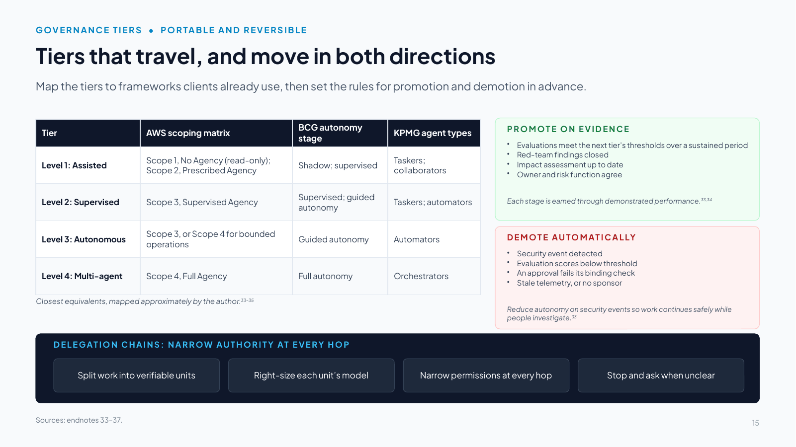
Slide text
Map the tiers to frameworks clients already use, then set the rules for promotion and demotion in advance.
| Tier | AWS scoping matrix | BCG autonomy stage | KPMG agent types |
|---|---|---|---|
| Level 1: Assisted | Scope 1, No Agency (read-only); Scope 2, Prescribed Agency | Shadow; supervised | Taskers; collaborators |
| Level 2: Supervised | Scope 3, Supervised Agency | Supervised; guided autonomy | Taskers; automators |
| Level 3: Autonomous | Scope 3, or Scope 4 for bounded operations | Guided autonomy | Automators |
| Level 4: Multi-agent | Scope 4, Full Agency | Full autonomy | Orchestrators |
Closest equivalents, mapped approximately by the author.33–35
PROMOTE ON EVIDENCE
Evaluations meet the next tier’s thresholds over a sustained period
Red-team findings closed
Impact assessment up to date
Owner and risk function agree
Each stage is earned through demonstrated performance.33,34
DEMOTE AUTOMATICALLY
Security event detected
Evaluation scores below threshold
An approval fails its binding check
Stale telemetry, or no sponsor
Reduce autonomy on security events so work continues safely while people investigate.33
DELEGATION CHAINS: NARROW AUTHORITY AT EVERY HOP
Split work into verifiable units
Right-size each unit’s model
Narrow permissions at every hop
Stop and ask when unclear
Speaker notes
The tiers are portable. Organizations may already classify agents with AWS's Agentic AI Security Scoping Matrix (four scopes: No Agency, Prescribed Agency, Supervised Agency, Full Agency) [33], BCG's four autonomy stages (shadow mode, supervised mode, guided autonomy, full autonomy) [34] or KPMG's TACO agent types (taskers, automators, collaborators, orchestrators) [35]. The table shows the closest equivalents. Because it is an approximate mapping, present it as a translation aid, not an equivalence.
Tiers move in both directions, with the rules set in advance:
- Promote on evidence: evaluations meet the next tier's thresholds over a sustained period, red-team findings are closed, the impact assessment is up to date, and the owner and risk function agree. BCG describes each stage as earned through demonstrated performance [34]. AWS advises expanding autonomy on demonstrated performance rather than by default [33].
- Demote automatically: a security event, evaluation scores below threshold, an approval that fails its binding check, stale telemetry or a lost sponsor drops the agent a tier, or to propose-only, without waiting for a meeting. AWS recommends designing systems to reduce autonomy automatically when security events are detected [33].
Delegation chains: research from Google DeepMind on intelligent delegation suggests four rules for every hop: split work into verifiable units (contract first), route each unit to the least costly model that meets its bar, give a sub-agent only the permissions its task needs, and challenge the delegator or ask a person when a request is ambiguous [36]. Never grant privilege on the strength of a role an agent claims for itself [37]. In the control plane, that means on-behalf-of tokens narrowed at each hop and one trace that joins every hop.
Slide 16 Extend identity and authority to every agent
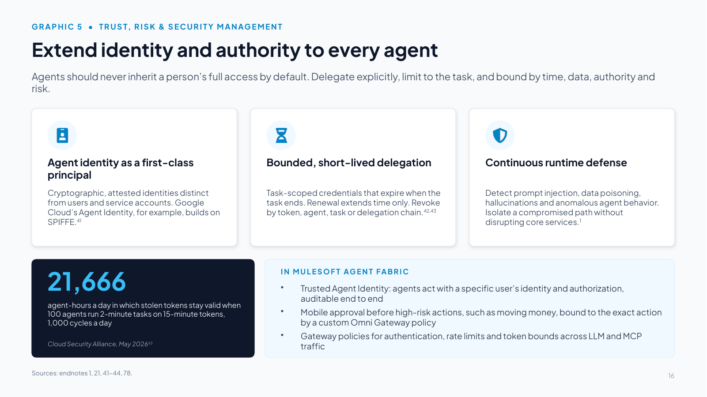
Slide text
Agents should never inherit a person’s full access by default. Delegate explicitly, limit to the task, and bound by time, data, authority and risk.
Agent identity as a first-class principal
Cryptographic, attested identities distinct from users and service accounts. Google Cloud’s Agent Identity, for example, builds on SPIFFE.41
Bounded, short-lived delegation
Task-scoped credentials that expire when the task ends. Renewal extends time only. Revoke by token, agent, task or delegation chain.42,43
Continuous runtime defense
Detect prompt injection, data poisoning, hallucinations and anomalous agent behavior. Isolate a compromised path without disrupting core services.1
21,666
agent-hours a day in which stolen tokens stay valid when 100 agents run 2-minute tasks on 15-minute tokens, 1,000 cycles a day
Cloud Security Alliance, May 202643
IN MULESOFT AGENT FABRIC
Trusted Agent Identity: agents act with a specific user’s identity and authorization, auditable end to end
Mobile approval before high-risk actions, such as moving money, bound to the exact action by a custom Omni Gateway policy
Gateway policies for authentication, rate limits and token bounds across LLM and MCP traffic
Speaker notes
Vendor ecosystem supporting these orchestration and TRiSM models:
- MuleSoft: API-led connectivity exposes legacy ERP/CRM systems to agents via governable API contracts and MCP tools. MuleSoft Agent Fabric is a cross-vendor control plane: Agent Registry and Scanners, Agent Broker, AI Gateway, Trusted Agent Identity, Agent Kill Switch and Visualizer [21].
- Hyperscalers: Microsoft has Microsoft Foundry and Microsoft Agent Framework (the successor to Semantic Kernel and AutoGen), with Microsoft Entra Agent ID and Agent 365 [12]. AWS offers Amazon Bedrock AgentCore, whose services include identity [62], and Step Functions. Google Cloud's Gemini Enterprise Agent Platform (formerly Vertex AI) comes with Model Armor and Agent Identity [41].
- Specialized gateways and frameworks: Kong AI Gateway, Cloudflare AI Gateway, LangGraph.
Agent Fabric's Scanners discover and register agents from these ecosystems, so it governs across them without replacing them.
Deeper research:
- Agents should not receive default entitlements or inherit a user's full identity context. Access should be delegated explicitly, limited to the task and bounded by time, data, authority and risk [1][42]. Keep authentication and authorization distinct and attach verification to the moment of action.
- Google Cloud [41] describes Agent Identity as a first-class principal type, distinct from human identities and service accounts, built on SPIFFE, cryptographically protected, attested and automatically provisioned, and pairs it with an Agent Gateway and runtime defense. It also notes that non-human identities outnumber human identities by 10 to 45 times in many large enterprises.
- The temporal identity paradox article [42] describes short-lived delegated tokens that are renewed with the same scope once the delegation is rechecked. The Cloud Security Alliance [43] quantifies the same problem: 100 concurrent agents finishing 2-minute tasks while holding 15-minute tokens across 1,000 daily cycles leave 21,666 agent-hours a day of valid-but-unneeded credentials. Its pattern: per-instance identities, task-scoped tokens with short lifetimes, key-bound credentials, mTLS plus token validation on every request, and four-level revocation.
- Microsoft Digital Defense Report 2025 [44]: identity attacks rose 32% in the first half of 2025, more than 97% were password attacks, and phishing-resistant MFA blocks over 99% of them. Attackers increasingly sign in rather than break in, which is why agent credentials must be short-lived and bound.
- Standards work gives this a vendor-neutral shape: NIST's National Cybersecurity Center of Excellence has proposed a project on software and AI agent identity and authorization, focused on identification, authorization, auditing, non-repudiation and prompt-injection controls [45]. An IETF draft on AI agent identity builds on workload identity (SPIFFE), short-lived key-bound credentials, OAuth delegation and token exchange, and real-time revocation through the OpenID Shared Signals Framework, and calls static API keys "an antipattern for agent identity" [46]. Both are drafts. The checklist: a unique identity per agent, authority that narrows at each hop, auditable actions, no static keys, and real-time revocation, which gives the kill switch a second path.
Slide 17 Map every agentic threat to a control
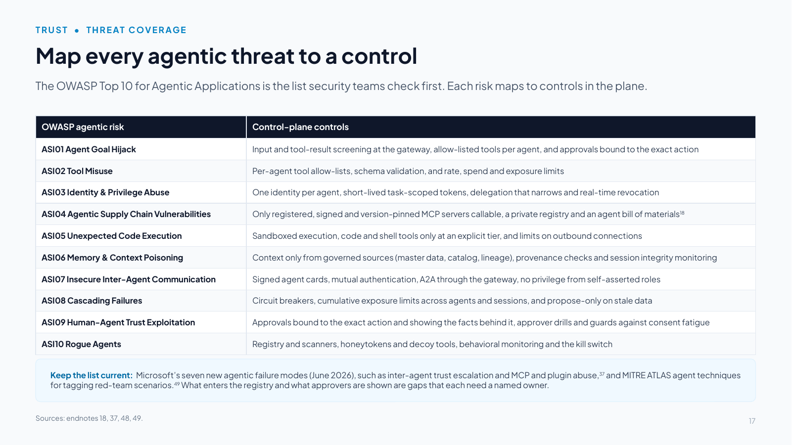
Slide text
The OWASP Top 10 for Agentic Applications is the list security teams check first. Each risk maps to controls in the plane.
| OWASP agentic risk | Control-plane controls |
|---|---|
| ASI01 Agent Goal Hijack | Input and tool-result screening at the gateway, allow-listed tools per agent, and approvals bound to the exact action |
| ASI02 Tool Misuse | Per-agent tool allow-lists, schema validation, and rate, spend and exposure limits |
| ASI03 Identity & Privilege Abuse | One identity per agent, short-lived task-scoped tokens, delegation that narrows and real-time revocation |
| ASI04 Agentic Supply Chain Vulnerabilities | Only registered, signed and version-pinned MCP servers callable, a private registry and an agent bill of materials18 |
| ASI05 Unexpected Code Execution | Sandboxed execution, code and shell tools only at an explicit tier, and limits on outbound connections |
| ASI06 Memory & Context Poisoning | Context only from governed sources (master data, catalog, lineage), provenance checks and session integrity monitoring |
| ASI07 Insecure Inter-Agent Communication | Signed agent cards, mutual authentication, A2A through the gateway, no privilege from self-asserted roles |
| ASI08 Cascading Failures | Circuit breakers, cumulative exposure limits across agents and sessions, and propose-only on stale data |
| ASI09 Human-Agent Trust Exploitation | Approvals bound to the exact action and showing the facts behind it, approver drills and guards against consent fatigue |
| ASI10 Rogue Agents | Registry and scanners, honeytokens and decoy tools, behavioral monitoring and the kill switch |
Keep the list current: Microsoft’s seven new agentic failure modes (June 2026), such as inter-agent trust escalation and MCP and plugin abuse,37 and MITRE ATLAS agent techniques for tagging red-team scenarios.49 What enters the registry and what approvers are shown are gaps that each need a named owner.
Speaker notes
CISOs judge security designs against the lists they already use. The OWASP Top 10 for Agentic Applications (December 2025) names ten risks [48]. The table maps each to the control-plane controls that address it. Walk two or three rows, then name the gaps.
Keep the list current: in June 2026 Microsoft's AI Red Team added seven agentic failure modes, including agentic supply chain compromise, goal hijacking, inter-agent trust escalation, session context contamination and MCP and plugin abuse, along with mitigations such as agent bills of materials covering MCP servers, signature and provenance checks with pinned versions, cryptographic agent identity and rejecting self-asserted roles at hand-offs [37]. Tag red-team scenarios with the agent techniques MITRE ATLAS added between December 2025 and June 2026, such as AI Agent Tool Credential Harvesting and Publish Poisoned AI Agent Tool [49]. For MCP specifically, BCG recommends private registries of trusted servers, version pinning, role-based access on every tool call and code checks before using public servers [18].
The gaps no gateway closes alone: the supply chain (what enters the registry) and human-agent trust (what approvers are shown). Give each a named owner.
Slide 18 Modernize the cryptographic foundation now
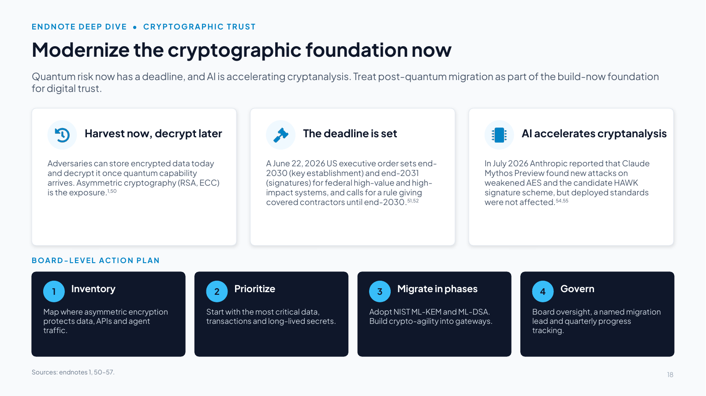
Slide text
Quantum risk now has a deadline, and AI is accelerating cryptanalysis. Treat post-quantum migration as part of the build-now foundation for digital trust.
Harvest now, decrypt later
Adversaries can store encrypted data today and decrypt it once quantum capability arrives. Asymmetric cryptography (RSA, ECC) is the exposure.1,50
The deadline is set
A June 22, 2026 US executive order sets end-2030 (key establishment) and end-2031 (signatures) for federal high-value and high-impact systems, and calls for a rule giving covered contractors until end-2030.51,52
AI accelerates cryptanalysis
In July 2026 Anthropic reported that Claude Mythos Preview found new attacks on weakened AES and the candidate HAWK signature scheme, but deployed standards were not affected.54,55
BOARD-LEVEL ACTION PLAN
1. Inventory
Map where asymmetric encryption protects data, APIs and agent traffic.
2. Prioritize
Start with the most critical data, transactions and long-lived secrets.
3. Migrate in phases
Adopt NIST ML-KEM and ML-DSA. Build crypto-agility into gateways.
4. Govern
Board oversight, a named migration lead and quarterly progress tracking.
Speaker notes
Reference endnotes [50]–[57]. As Anthropic's July 2026 research showed, AI models can already find new attacks on a weakened version of a widely used cipher (AES) and on a candidate post-quantum scheme (HAWK), although neither affects encryption deployed today [54][55]. Agent traffic crosses clouds and services over TLS, and OMB's implementation memorandum already expects infrastructure that terminates TLS to support post-quantum key exchange and API gateways to issue and validate post-quantum-signed tokens [50], so plan the control plane's own migration to post-quantum cryptography (PQC) now.
Policy context:
- NSM-10 dates from May 2022. The mandate in force is the executive order "Securing the Nation Against Advanced Cryptographic Attacks," signed June 22, 2026: agencies must move high-value and high-impact systems to quantum-resistant key establishment by December 31, 2030 and to post-quantum digital signatures by December 31, 2031, and the order directs the FAR Council to propose, within 180 days, a rule requiring covered contractors to comply with NIST's post-quantum standards by the end of 2030 [51][52]. OMB Memorandum M-26-15 (June 24, 2026) sets out how agencies execute the migration [50]. NIST finalized FIPS 203 (ML-KEM), 204 (ML-DSA) and 205 (SLH-DSA) in August 2024 [53].
- The New York Times [54] reported that Claude Mythos Preview found new attacks against a weakened, seven-round version of AES and against HAWK, a candidate post-quantum signature scheme, and that the AES attack is 200 to 800 times faster than the best earlier human-developed attack. Anthropic said the findings do not threaten deployed encryption [55]. The lesson is that AI is compressing the time between a theoretical weakness and a practical attack.
Board context: post-quantum migration needs board oversight and cross-functional coordination, so it cannot be run as a narrow security-team initiative [56][57]. A 2026 board discussion guide in the NACD–ISA Director's Handbook on Cyber-Risk Oversight cites Bain research finding roughly 90% of companies unprepared for quantum threats, and an ISACA study finding only 4% with a defined quantum strategy [57].
Slide 19 Govern output integrity and protect human judgment
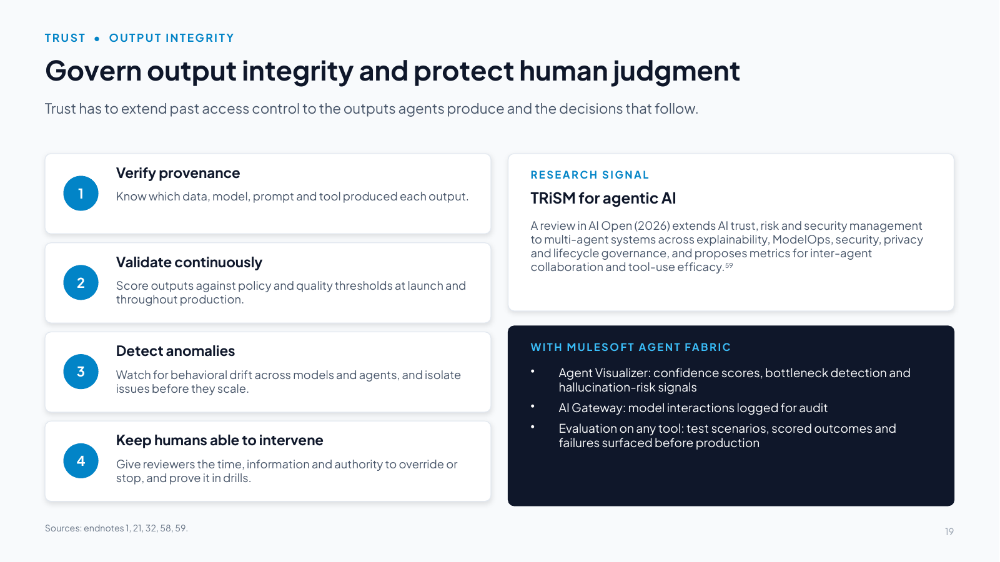
Slide text
Trust has to extend past access control to the outputs agents produce and the decisions that follow.
1. Verify provenance
Know which data, model, prompt and tool produced each output.
2. Validate continuously
Score outputs against policy and quality thresholds at launch and throughout production.
3. Detect anomalies
Watch for behavioral drift across models and agents, and isolate issues before they scale.
4. Keep humans able to intervene
Give reviewers the time, information and authority to override or stop, and prove it in drills.
RESEARCH SIGNAL
TRiSM for agentic AI
A review in AI Open (2026) extends AI trust, risk and security management to multi-agent systems across explainability, ModelOps, security, privacy and lifecycle governance, and proposes metrics for inter-agent collaboration and tool-use efficacy.59
WITH MULESOFT AGENT FABRIC
Agent Visualizer: confidence scores, bottleneck detection and hallucination-risk signals
AI Gateway: model interactions logged for audit
Evaluation on any tool: test scenarios, scored outcomes and failures surfaced before production
Speaker notes
Key point: trust must extend beyond access and model performance to output integrity and the decisions that follow [1]. The control plane should verify provenance, continuously validate outputs and detect behavioral anomalies across models and agents, so inaccurate, manipulated or out-of-policy results are caught before they influence a human decision or a customer interaction. This reduces automation bias, keeps human judgment central where it matters most, and prevents bad outputs from being scaled across the enterprise. AI-native banking products show where this is heading: governance built into the product itself, autonomy granted by permission, and customers able to review and override decisions [58]. Keeping humans central also means keeping oversight exercisable: reviewers need the time, information and authority to override or stop an agent, automation bias is a known failure mode, and drills should prove people can intervene [30][32].
The TRiSM review [59] (Raza et al., AI Open 7, 2026; arXiv 2506.04133) adapts AI TRiSM to LLM-based multi-agent systems around explainability, ModelOps, security, privacy and lifecycle governance. It proposes a risk taxonomy from coordination failures to prompt-based adversarial manipulation, and introduces two metrics: the Component Synergy Score (inter-agent collaboration) and Tool Utilization Efficacy (whether tools are invoked correctly and efficiently).
Agent Fabric: Agent Visualizer shows confidence scores, bottleneck detection and hallucination risks across the agent network [21]. The evaluation itself can run on any tool that generates test scenarios, scores outcomes against success criteria and surfaces failures before production. Record the results with the agent's registry entry, so a failing agent can be tied to a remediation action.
Evaluation runs through the whole lifecycle: test before promotion, score sampled production traces continuously, keep a standing red-team suite whose results feed tier decisions, and evaluate the trajectory (which tools, in what order) as well as the final answer [60]. In a large public red-teaming competition run with NIST's Center for AI Standards and Innovation, more than 250,000 attack attempts from over 400 participants found at least one successful hijacking attack against all 13 frontier models tested [61]. Evaluation does not depend on any one vendor: AWS AgentCore Evaluations offers online evaluation of sampled live traces and on-demand tests in CI/CD [62], and Microsoft describes ASSERT, an open-source framework that turns behavior specifications into evaluations [63].
After the kill switch comes human takeover: define who takes over the agent's open work, with what information (trace, pending actions and approvals, data touched), and how the process continues in a degraded mode. BCG advises clear protocols for human workers to take over should agents be taken offline [64]. Rehearse it: 66% of employees who use AI at work say they rely on its output without evaluating its accuracy, and 56% have made mistakes because of AI [65]. In KPMG's Q1 2026 pulse, 63% of organizations required human validation of agent outputs, up from 22% a year earlier [8].
Slide 20 When agents can move equipment
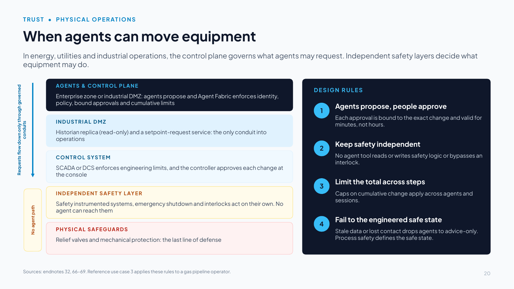
Slide text
In energy, utilities and industrial operations, the control plane governs what agents may request. Independent safety layers decide what equipment may do.
AGENTS & CONTROL PLANE
Enterprise zone or industrial DMZ: agents propose and Agent Fabric enforces identity, policy, bound approvals and cumulative limits
INDUSTRIAL DMZ
Historian replica (read-only) and a setpoint-request service: the only conduit into operations
CONTROL SYSTEM
SCADA or DCS enforces engineering limits, and the controller approves each change at the console
INDEPENDENT SAFETY LAYER
Safety instrumented systems, emergency shutdown and interlocks act on their own. No agent can reach them
PHYSICAL SAFEGUARDS
Relief valves and mechanical protection: the last line of defense
Requests flow down only through governed conduits
No agent path
DESIGN RULES
1. Agents propose, people approve
Each approval is bound to the exact change and valid for minutes, not hours.
2. Keep safety independent
No agent tool reads or writes safety logic or bypasses an interlock.
3. Limit the total across steps
Caps on cumulative change apply across agents and sessions.
4. Fail to the engineered safe state
Stale data or lost contact drops agents to advice-only. Process safety defines the safe state.
Sources: endnotes 32, 66–69. Reference use case 3 applies these rules to a gas pipeline operator.
Speaker notes
Key point: when an agent's action can reach physical equipment, the gateway is not the last line of defense. The control plane governs what agents may request, while independent safety layers decide what equipment may do.
The layers, top to bottom: agents and the control plane sit in the enterprise zone or industrial DMZ. Next is the DMZ itself, with a read-only historian replica and a setpoint-request service as the only conduit into operations. Below it is the control system, which enforces engineering limits and where the controller approves each change. Then comes the independent safety layer (safety instrumented systems, emergency shutdown, interlocks), which acts on its own under process-safety discipline [66]. Physical safeguards such as relief valves sit at the bottom.
Current guidance from US, Australian and allied cybersecurity agencies is explicit: people remain responsible for functional safety, AI should not actively control OT without a human in the loop, and AI systems need failsafes so they fail gracefully without disrupting critical operations [67]. Keep agents out of the control network and reach control systems only through defined conduits, following the ISA/IEC 62443 zone-and-conduit model and NIST's guide to OT security [68][69].
The four design rules on the right become runtime enforcement through custom Omni Gateway policies: Approval-to-Execution Binding checks that what executes is exactly what was approved and that the approval has not expired, and the Cross-Session Aggregate-Risk Gate caps cumulative change across agents and sessions [78]. When data goes stale, fall back to the safe state that process-safety engineering defines, which is not always "stop."
Regulation points the same way: under the EU AI Act, AI used as a safety component in the supply of water, gas, heating or electricity is high-risk, with human-oversight obligations from December 2027 [32]. Reference use case 3 shows the pattern at a natural gas pipeline operator.